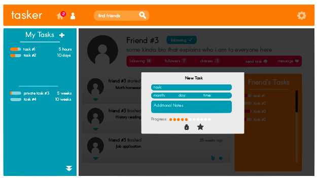

Tasker
Tasker is a group project I worked on when I took the Ruby on Rails decal (CS 198) at UC Berkeley. It is a social media web application that allows people to connect with friends from school or work and share their to-do lists.
Our idea was that people are more likely to finish a task if other people know about it and can motivate them to finish it. Users get notified whenever one of their friends begins and finishes a task, and are rewarded with a cute picture every time they finish an item on their to-do-list. I made mockups of the UI for fun.
The following are mockups of the UI that I designed in Adobe Illustrator.
Our idea was that people are more likely to finish a task if other people know about it and can motivate them to finish it. Users get notified whenever one of their friends begins and finishes a task, and are rewarded with a cute picture every time they finish an item on their to-do-list. I made mockups of the UI for fun.
The following are mockups of the UI that I designed in Adobe Illustrator.


